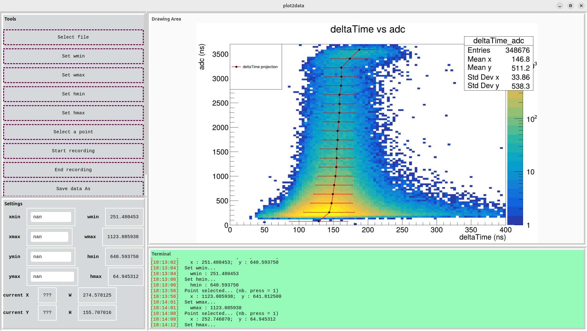

Add mouse events in plot2data
Lognumber 49.
Submitted on Thu, 04 Sep 2025 - 18:24:18 CEST
Marker: software development
Send to:
To do:
- rename wmin, wmax, hmin, hmax to w1, w2, h1, h2 ?
- make user friendly the selection of w1, w2, ...
- convert xmin, xmax, ymin, ymax entries to double using std::atof (tips: Entry::get_tex() method)
- add the w2x and h2y functions
- load a files
Attachments (1)
1.
